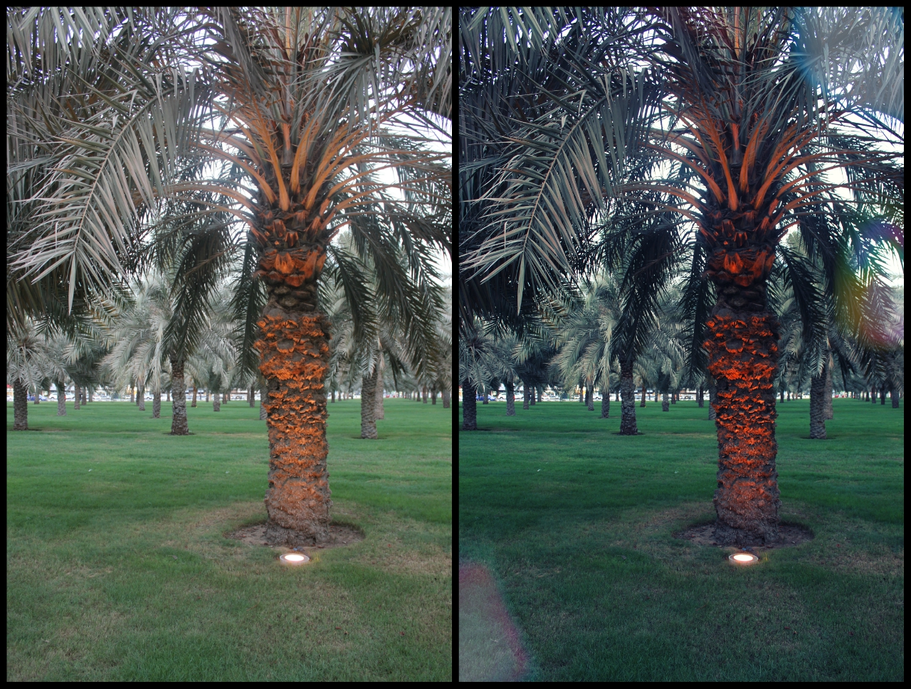
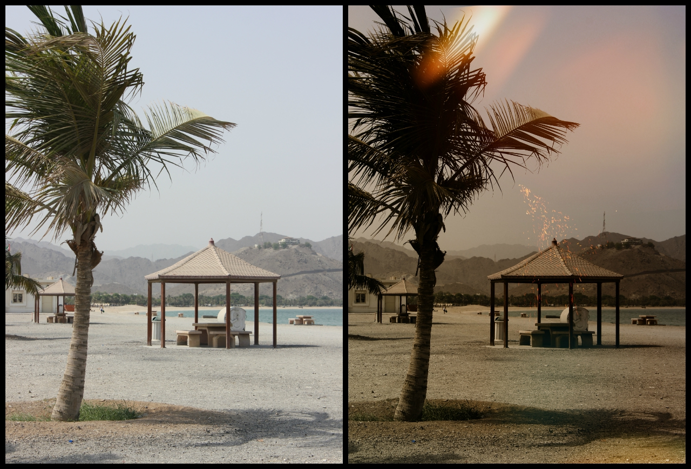
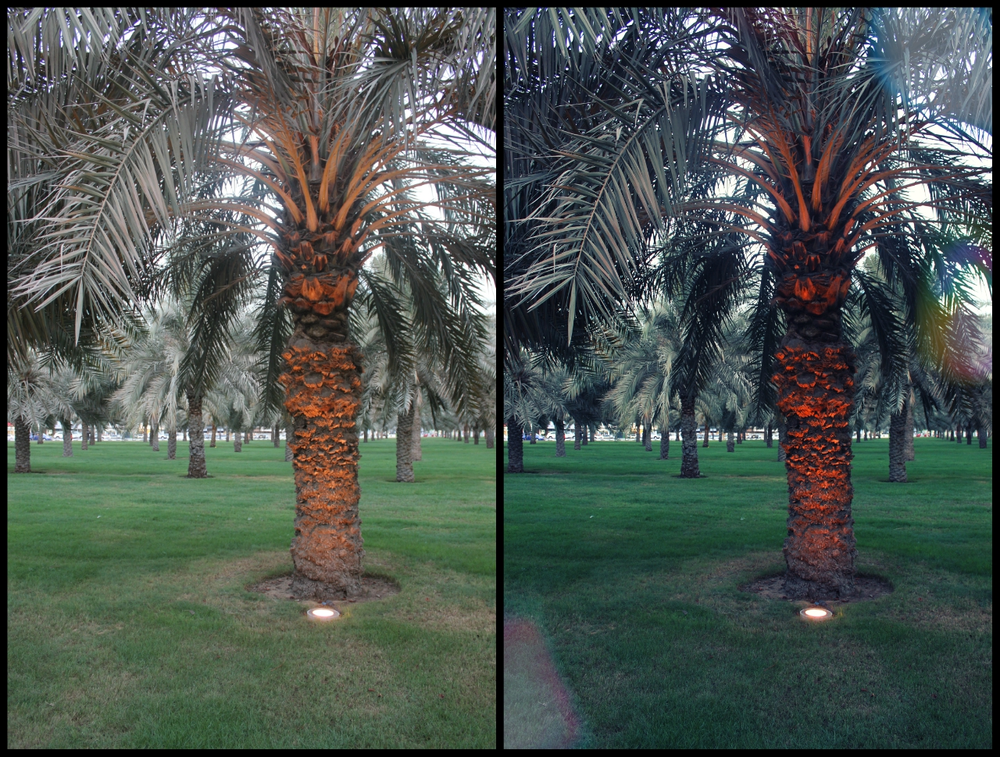
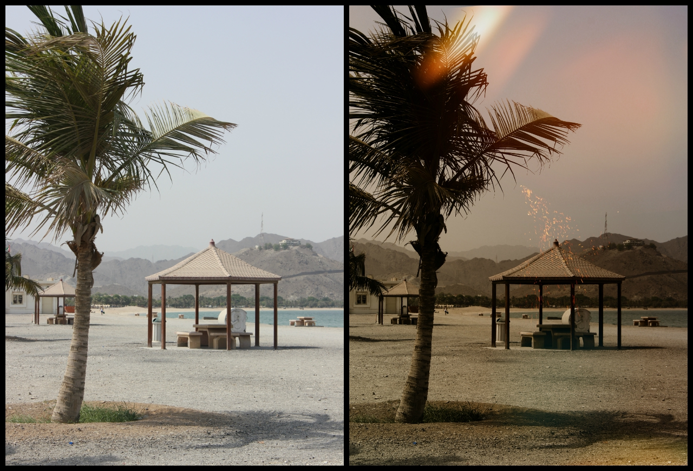

Photoshop
As someone who is a visual learner, I delved into photoshop to explore
various designs and hone in on my ability to manipulate visual elements of
existing designs and grow to create some of my own
Below are some capture of before and after edits of a few images. I hope you enjoy going through them.
Before and after
Gaming
I was first introduced to the world of gaming through Super Mario. Young and easily excitable, I spent countless hours playing that game on every platform I had access
to growing up. From the GameBoy to the first edition of the Playstation, Super Mario was a gateway for a variety of other games for me, and it is why I adopted gaming as
a consistent and serious hobby. Gaming grew in importance to me from then on; I purchased all gaming platforms I could afford, saving up from my allowance and relentlessly
begging my parents to get me the newest Playstation or Xbox. I'd then nag them for the newest and coolest games, because what's the use of a Playstation if I did not get at
least 20 games to play on it? While it proved to be rather expensive (something younger me did not consider), gaming was a whole new world filled with creative,
unimaginable adventures that I always wanted to be a part of. It also sparked my interest in computers, software and development; how could they get these characters
animated?Ready to perform actions through the touch of a button? It was (and continues to be) so fascinating to me, I had to find out. And here I am, while not in game
development, am majoring into one variation of the vast universe of computers, studying how to create content of my own, with thanks to Super Mario.
Soccer
This one is like a family tradition. Perhaps it is weird to call interest in soccer a family tradition, but it really fits well with that description.
To honor this family tradition, I played soccer throughout elementary school to strengthen my muscle and toughen up for when the real deal
came; middle school. I competed in a team, where I won multiple trophies and got many recognitions. My dedication to this combative sport did not stop there, as I spent every second of every day as a 12 year-old manuevering the ball
in a field of rocks under my apartment building, then I turned 18, went to college and decided to major in ITM. Good times!
 


